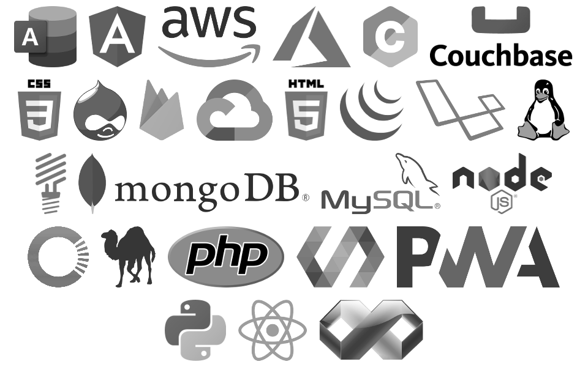

Daniel Turner
Github: https://github.com/DanielTurner
LinkedIn: https://www.linkedin.com/in/daniel-turner-510777133/
Gitlab: https://gitlab.com/users/danielturner
Professional Summary
Over twenty years demonstrated experience in leadership and software development for enterprise and startups, with expert knowledge of the full development cycle. Producing scalable architectures, big data, micro services, cloud infrastructure, reusable clean code. Leading and managing teams improving workflow and reducing downtime and bugs.
Areas of Expertise
- Team leadership and management. - 6 Years.
- Remote team management - 1 Year.
- Agile methodology - 5 Years.
- Software architecture- 14 Years.
- API Design - 6 Years.
- Clean coding - 7 Years.
- Test driven development - 5 Years.
- Object oriented programming - 17 Years.
- Functional programming - 7 Years.
- Rapid prototype development - 2 Years.
- Progressive web applications - 4 Years.
- Single page applications - 2 Years.
- Desktop applications - 2 Years.
Technical Skills
Engineered using Web components, ES6 JavaScript, NodeJS, PHP, Python, Perl, Visual Basic and C. Using libraries and frameworks such as LitElement, React, AngularJS, jQuery, Laravel, Lumen and Drupal. Leveraging NoSQL and RDBMS databases such as Firebase, MySQL, Couchbase, Mongo and Access. Experienced also at devops with linux and cloud services such as AWS, Google Cloud and Microsoft Azure.

Experience
Program Manager
IMS Pty. Ltd. - Maroochydore, QLD
- Introduced modern development concepts and procedures eliminating legacy code by 30%.
- Mentored a team of 5 developers.
- Designed infrastructure solutions around software delivery making the chance of errors close to zero.
- Developed object-oriented Progressive Web Applications for use in the asbestos industry.
- Implemented quality assurance measures which increased the rate bug detection rate by 68%.
- Through collaboration with developers more efficient means were discovered decreasing database connections by 99%.
Software Engineer
Unattended Technologies Pty. Ltd. - Noosaville, QLD
- Collaborated with project managers, developers, quality assurance and customers to accelerate solution creation.
- Devised innovative solutions, planned for future improvements and documented resolutions.
- Worked closely with team members to actualize robust solutions to meet client requirements for functionality, scalability and performance exceeding existing capacity by a factor of 900.
- Authored highly maintainable, clean code for the IOT web application for the vending industry resulting in a 40% increase in velocity.
Software Engineer
EyeonIT Pty. Ltd. - Maroochydore QLD
- Delivered and advocated high quality solutions.
- Constructed reusable components for rapid development of several web applications that tripled yearly output.
- Rapidly prototyped cross platform and cross delivery method progressive web applications.
- Aided in the planning and implementation of agile resulting in 5% less features.
- Insisted on version control and code reviews resulting in 45% less bugs released.
- Produced a modular and configurable PWA used in the telecommunications industry.
Lead Software Engineer
Italic Creative - Maroochydore QLD
- Built a highly scalable, modular progressive web application for use in the Healthcare Industry.
- Coordinated with UI designers and Project Managers to evaluate and improve software and user experience increasing usability an estimated 10% over original designs.
- Strengthened developmental methodologies by introducing version control, code quality, code reviews, automated linting and unit testing resulting in minimising released software bugs by 87%.
Software Engineer
CV Global - Kunda Park, QLD
- Collaborated with project managers, developers, quality assurance and customers to resolve technical issues.
- Orchestrated efficient large-scale software deployments across 3 datacenters.
- Robust technologies were developed to meet requirements including more than 100,000 requests per second.
- Investigated new and evolving software technologies including Artificial Intelligence.
- Supported global customers spanning 24 time zones resolving issues.
- Created a Pseudonymous remailer with zero intrusions and prototyped sentimental analysis reports.
- Produced microservice decreasing content production time by an average of 15%.
Software Development Manager
Star Technologies Australia - Buderim, QLD
- Inspected final products for performance metrics, including application uptime, overall performance and ease of use achieving a 99% uptime.
- Implemented new tools to optimize workflow cutting paperwork by 30%.
- Mentored a team of 4 developers.
- Wrote clean, clear and well-tested code for 40+ projects including desktop applications and a bespoke CMS.
Lead Software Engineer
Limestar Studio - Noosaville, QLD
- Worked closely with clients to create requirements for issues and prototypes for the projects.
- Composed custom solutions for clients using PHP, MySQL, JavaScript, HTML and CSS halving download size.
- Built a templating system for rapid development of websites reducing development costs by 30%.
Software Developer
Highgate Software - Toowong, QLD
- Introduced cascading style sheets and reusable code slashing the codebase size by 30%.
- Developed software for government departments including Office of Fair Trading, Building Service Authority and other large corporations.
Education
- 20+ Years of Industry Experience
- Certificate IV in Business Management - Small Business Management
- Bachelor of Applied Information Technology